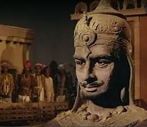
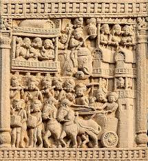

Ajatashatru

Ajatashatrureinó c. 492 a 460 a. C., o c. 405 a 373 a. C. Fue uno de los reyes más importantes de la dinastía. Era hijo del rey Bimbisara y contemporáneo de Mahavira y Gautama Buddha . Tomó por la fuerza el reino de Magadha de su padre y lo encarceló. Luchó contra la Liga Vajjika , liderada por los Licchavis , y conquistó la república de Vaishali . La ciudad de Pataliputra se formó mediante la fortificación de una aldea por Ajatashatru.
Ajatashatru siguió políticas de conquista y expansión. Derrotó a sus rivales vecinos, incluido el rey de Kosala ; sus hermanos, en desacuerdo con él, se marcharon a Kashi, que había sido entregado a Bimbisara como dote, lo que desencadenó una guerra entre Magadha y Kosala .
Ajatashatru ocupó Kashi y capturó los reinos más pequeños. Magadha bajo Ajatashatru se convirtió en el reino más poderoso del norte de la India.
La Tradición Jaina
Una vez, la reina Padmavati, esposa de Ajatashatru, estaba sentada en su balcón al atardecer. Vio a los kumaras Halla y Vihalla con sus esposas sentadas en el elefante "Sechanaka", y una de ellas lucía el collar divino de 18 pliegues. Entonces oyó a una de las sirvientas hablar desde el jardín inferior: «Son los kumaras Halla y Vihalla, y no el rey, quienes disfrutan de los verdaderos placeres del reino». Padmavati pensó: «¿De qué sirve el reino si no tengo ambas joyas?».
Así que, compartió este pensamiento con Ajatashatru esa misma noche e insistió excesivamente en su demanda. Ajatashatru, finalmente, accedió y envió una solicitud a sus dos hermanos para que le entregaran el elefante y el collar, lo cual ambos hermanos negaron, diciendo que estos regalos eran de su querido padre, así que ¿por qué debían separarse de ellos? Ajatashatru envió la solicitud tres veces, pero recibió la misma respuesta las tres veces. Esto lo molestó mucho, así que envió a sus hombres a arrestarlos. Mientras tanto, Halla y los kumaras Vihalla vieron una oportunidad y escaparon con su abuelo materno Chetaka, quien era el rey del gran reino de la república Vaishali (tribu Vajjis/Licchavi). Ajatashatru envió tres avisos a Chetaka para que los entregara, pero Chetaka se negó.
Esto fue suficiente para Ajatashatru. Llamó a sus medio hermanos, Kalakumaras (10 Kalakumaras, los nacidos del rey Bimbisara y 10 reinas Kali: Kali, Sukali, Mahakali, etc.) para unir su ejército al suyo, ya que Ajatashatru sabía bien que la república Vaishali siempre había sido invencible en el pasado y que él solo no podría derrotarla. Cada Kalakumara trajo 3000 caballos, 3000 elefantes, 3000 carros y 30 000 soldados de infantería cada uno. Por otro lado, Chetaka invitó a sus propios aliados (9 Mallas, 9 Lichhvis y 18 reyes de Kasi-Kosala) para luchar contra su nieto Ajatashatru. Todos estos reyes vinieron con 3000 caballos, 3000 elefantes, 3000 carros y 30 000 soldados de infantería cada uno. En total había 57.000 elefantes, 57.000 carros, 57.000 caballos y 570.000 soldados de infantería.

La guerra comenzó. El rey Chetaka era un devoto seguidor de Mahavira y había hecho voto de no disparar más de una flecha al día durante la guerra. Era bien sabido que la puntería de Chetaka era perfecta y sus flechas infalibles. Su primera flecha mató a un tal Kalakumara, comandante de Ajatashatru. Durante los nueve días consecutivos, Chetaka mató a los demás Kalakumaras. Profundamente afligidas por la muerte de sus hijos, las reinas Kali fueron iniciadas como monjas en la sagrada orden de Mahavira.
Mientras Ajatashatru se acercaba a la derrota, practicó penitencia durante tres días y ofreció oraciones a Sakrendra y Charmendra (Indra de diferentes cielos), quienes lo ayudaron en la guerra. Lo protegieron de la flecha infalible de Chetaka. La guerra se volvió muy dura y, por la influencia divina de los Indras, se decía que incluso las piedras, pajas y hojas lanzadas por los hombres de Ajatashatru caían como rocas sobre el ejército de Chetaka. Esta arma recibió el nombre de "Mahasilakantaka", es decir, el arma por la que murieron más de cien mil personas. A continuación, los Indras le entregaron a Ajatashatru un enorme carro de combate automático con mazas puntiagudas a cada lado (y que, según se decía, era conducido por el propio Charmendra). El carro se desplazaba por el campo de batalla aplastando a cientos de miles de soldados. Este carro de guerra se llamó "Ratha-Musala".
Representaciones en la Cultura Popular
- Un relato novelado de Ajatashatru, representado como una figura físicamente grosera y tiránica, aparece en la novela Creación de Gore Vidal.
- Aparece como protagonista en la película Amrapali (1966), interpretado por Sunil Dutt junto a Vyjayanthimala en el papel principal.
- Subba Rao escribió un libro sobre su vida titulado Ajatashatru.